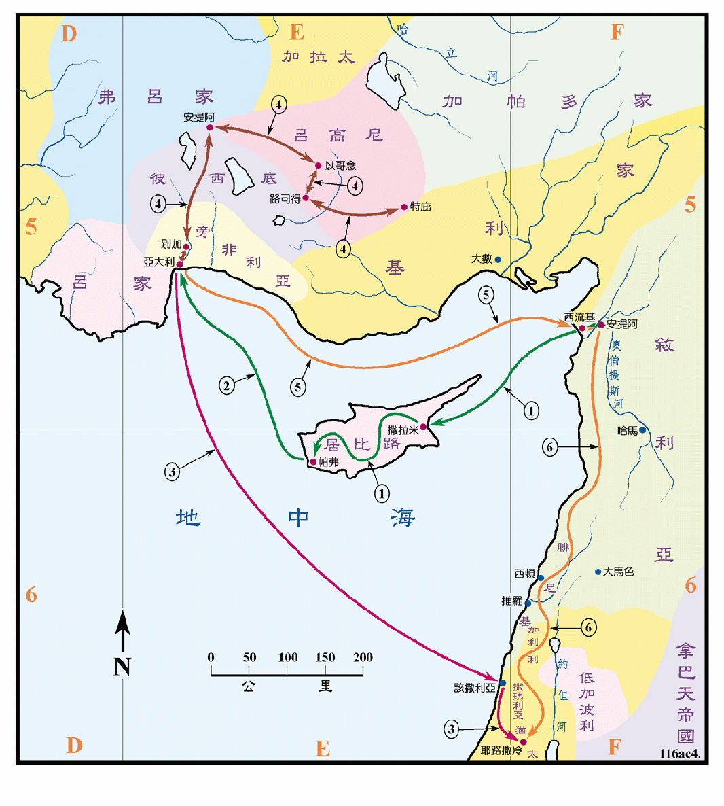

约是主后47至48年之间

行动线说明
| 序号 | 圣经 | 说明 |
|---|---|---|
| 1 | 徒13:1-12 | 保罗等被圣灵差遣，从安提阿经西流基到居比路岛传道，从撒拉米起，经过全岛直到帕弗。 |
| 2 | 徒13:13 | 保罗等从帕弗过海，来到旁非利亚的别加 (应是经过亚大利港)。 |
| 3 | 徒13:13 | 约翰在别加离开保罗等回耶路撒冷。 |
| 4 | 徒13:14-14:23 | 保罗等去安提阿、以哥念、路司得和特庇工作，再回别加。 |
| 5 | 徒14:24-26 | 保罗从别加经亚大利回安提阿。 |
| 6 | 徒15:1-5 | 保罗等从安提阿上耶路撒冷，经过腓尼基和撒玛利亚，沿途传讲福音。 |
保罗 (按徒13:8节所记：扫罗又名保罗，圣经从此节起改称为保罗) 曾三次被教会差遣出去传道，虽然一次比一次远，但仍然是在罗马帝国的领土之内，他因具有罗马帝国公民的身分，所以可以畅行无阻，而且当时帝国内的公路网四通八达，交通便利，人们都通晓希腊文，各地也都有犹太人和他们的会堂，所以减少了许多的麻烦，他们一方面受到欢迎，成果丰硕；但是在另一方面就受到一些犹太人和异教徒的攻击，保罗有几次都几乎丧命，所以旅途中是充满了艰辛和危险，的确是需要极大勇气和耐力。
在本段中提到两个安提阿城，这两个城都是西流基王在 301BC 所建，为尊崇他的父亲，故命名叫安提阿。为分辨两者，按其位置之所在，前者叫叙利亚的安提阿，后者则是彼西底的安提阿。保罗可能是在叙利亚的安提阿写了加拉太书。